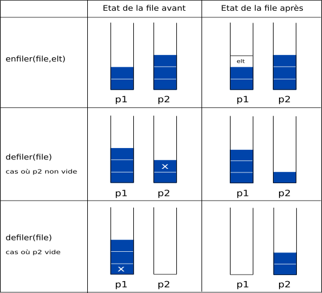

Exercice#
Cet exercice utilise le module pile.py qui implémente la structure de pile.
On dispose des fonctions suivantes relatives aux files qui constituent son interface.
créer une file vide : F=creer_file()
enfiler une valeur e : enfiler(F,e)
défiler une valeur : defiler(F)
tester si une pile est vide : est_vide(F)
On choisit d”implémenter une file à l’aide d’un couple (p1,p2) où p1 et p2 sont deux piles.
Ainsi file[0] et file[1] sont respectivement les piles p1 et p2.
On rappelle l’interface de la pile :
créer une pile vide : P=creer_pile()
empiler une valeur e : P.empiler(e)
dépiler une valeur : P.depiler()
tester si une pile est vide : P.est_vide()
Pour enfiler un nouvel élément elt dans file, on l’empile dans p1.
Pour défiler file, deux cas se présentent:
la pile
p2n’est pas vide : on dépilep2.la pile
p2est vide: on dépile les éléments dep1en les empilant dansp2jusqu’à ce quep1soit vide, puis on dépilep2.

Questions#
Représenter par un schéma le contenu des deux piles après la suite d’instructions suivantes:
F=creer_file()
enfiler(F,5)
enfiler(F,7)
enfiler(F,1)
On reprend la file F précédente et on exécute la suite d’instructions suivantes:
defiler(F)
defiler(F)
enfiler(F,9)
Représenter par un schéma le contenu des deux piles
On donne ci-dessous la fonction creer_file qui crée une file F avec 2 piles P1 et P2.
from pile import Pile, creer_pile
def creer_file():
P1=creer_pile()
P2=creer_pile()
return [P1,P2]
L’objectif est d’écrire des fonctions qui permettent de manipuler les éléments de la file F.
pour tester si une file est vide : est_vide(F)
pour enfiler une valeur e dans la file : enfiler(F,e)
pour defiler la file (en supprimant sa valeur) : defiler(F)
Écrire en Python une fonction est_vide(F) qui prend en argument une file F et qui renvoie True si la file représentée par F est vide, False sinon.
Écrire en Python une fonction enfiler(F,elt) qui prend en argument une file F et qui ajoute elt en queue de la file F.
Écrire en Python une fonction defiler(F) qui prend en argument une file F et qui renvoie l’élément en tête de la file F en le retirant.
[11]:
from pile import Pile, creer_pile
def creer_file():
P1=creer_pile()
P2=creer_pile()
return [P1,P2]
def est_vide(file):
return file[0].est_vide() and file[1].est_vide()
def enfiler(file,elt):
file[0].empiler(elt)
return file
def defiler(file):
if not file[1].est_vide():
file[1].depiler()
else:
while not file[0].est_vide():
file[1].empiler(file[0].depiler())
file[1].depiler()
[13]:
F=creer_file()
est_vide(F)
enfiler(F,5)
enfiler(F,7)
enfiler(F,8)
enfiler(F,1)
print(F)
# defiler(F)
defiler(F)
enfiler(F,9)
print(F)
[... ] 1 ] 8 ] 7 ] 5 ], ... ]]
[... ] 9 ], ... ] 8 ] 1 ]]
[ ]: